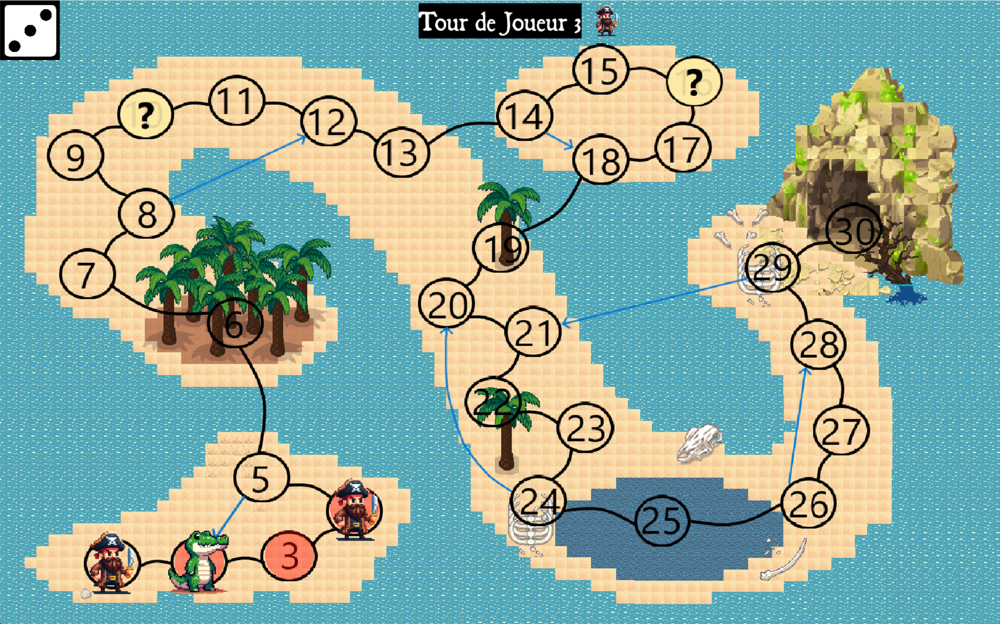

Documentation du Jeu “Tresor Tropic” réalisé par Hugo Capon¶

Table des matières¶
0. Guide d'Installation et Lancement Rapide¶
Commencez par télécharger le projet depuis le Git: http://extra.univ-littoral.fr/gitlab/capon.hugo/tresor-tropic.git
Bibliothèques nécessaires:
- Python
- Pygame
Lancement Rapide:
- Pour lancer le jeu graphique, allez dans le dossier "Jeu" et exécutez "MenuGraphique.py"
- Pour lancer le jeu en Terminal, allez dans le dossier "Jeu" et exécutez "Main.py"
1. Introduction¶
Bienvenue dans la documentation du jeu “Tresor Tropic”.
Ce jeu vous plonge dans un univers d’aventure où des héros combattent des monstres redoutables pour atteindre le trésor. Préparez-vous à vous combattre les uns les autres, car un seul jeu peut arriver au trésor !
2. Objectif du Jeu¶
L’objectif de “Tresor Tropic” est d’arriver au trésor le premier. Mais cela ne sera pas aussi simple…
Vous devrez combattre des monstres et joueurs adverses qui se dresseront sur votre chemin tout en atteignant la fin du plateau de jeu. Seuls les plus stratèges et chanceux réussiront à triompher !
3. Règles¶
3.1 Mouvement¶
Pour avancer, lancez les dés pour déterminer combien de cases vous pouvez vous déplacer.
Suivez les flèches du plateau pour progresser.
3.2 Combat¶
Les combats se produisent lorsqu’un joueur passe par une case monstre ou avance sur une case joueur. Lancez les dés pour déterminer le résultat du combat. Le plus haut score l’emporte. En cas d’égalité, un nouveau combat commence.
4. Personnages¶
4.1 Joueurs¶
Vous incarnez l’un des quatre courageux héros. Chaque joueur a un avatar unique pour le représenter sur le plateau:
- Deux pirates,
- Un perroquet,
- Un aventurier,
- Un crocodile,
- Un pirate squelette.
4.2 Monstres¶
Vous affronterez une variété de monstres:
- Des créatures sauvages,
- Un monstre marin,
- Des pirates maudits.
5. Plateau de Jeu¶
Le plateau de jeu est composé 30 cases. Les joueurs commencent case 1.
6. Événements¶
Des cases spéciales sont présentes sur le plateau:
- Cases Echelles: Vous feront soit avancer soit reculer
- Cases Monstres
- Cases Joueurs (si joueur présent)
- Cases spéciales: Permettent de une carte spéciale parmi 3 cartes: Rejouer, Echanger de position avec un joueur, ou bien Faire reculer un joueur
7. Gagner et Perdre¶
Pour gagner, atteignez la dernière case du plateau.
Vous perdez si un des joueurs est arrivé avant vous.
8. Personnalisation¶
“Tresor Tropic” offre des options de personnalisation d’avatar et de choix de joueurs. Quatre avatars sont sélectionnables et vous pouvez jouer de 1 à 4 joueurs.
9. Développement et Réalisation¶
Le jeu a été développé par Hugo Capon.
- Langage et librairies:
- Python
- Pygame
- json
- subprocess
10. Crédits¶
- Personnages et map
- Tiled pour la carte
- Water Assets pour Tiled
- Bing AI Image
- Game-icons.net
- Image by upklyak on Freepik
- Vidéo
- Naughty Dog pour la musique d'Uncharted